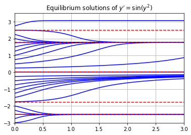

First Order Equations
import numpy as np
import matplotlib.pyplot as plt
Definitions
A differential equation is an equation involving an unknown function $y(t)$ (with independent variable $t$) and its derivatives $y'$, $y''$, $y'''$, etc. The order of a differential equation refers to the highest order derivative of the unknown function $y(t)$ appearing in the equation. A differential equation is linear if it is of the form
$$ a_n(t) y^{(n)} + a_{n_1}(t) y^{(n-1)} + \cdots + a_1(t) y' + a_0(t) y_0 = f(t) $$
where $a_n, \dots, a_0, f$ are functions of the independent variable $t$ only. For example, the equation
$$ y'' + ty' + y^2 = t $$
is second order non-linear, and the equation
$$ y' + ty = t^2 $$
is first order linear. Most differential equations are impossible to solve explicitly however we can always use numerical methods to approximate solutions.
Euler's Method
The simplest numerical method for approximating solutions of differential equations is Euler's method. Consider a first order differential equation with an initial condition:
$$ y' = f(y,y) \ , \ \ y(t_0)=y_0 $$
The procedure for Euler's method is as follows:
-
Contruct the equation of the tangent line to the unknown function $y(t)$ at $t=t_0$:
$$ y = y(t_0) + f(y_0,t_0)(t - t_0) $$
where $y'(t_0) = f(y_0,t_0)$ is the slope of $y(t)$ at $t=t_0$.
-
Use the tangent line to approximate $y(t)$ at a small time step $t_1 = t_0 + h$: $$ y_1 = y_0 + f(y_0,t_0)(t_1 - t_0) $$ where $y_1 \approx y(t_1)$.
-
Construct the tangent line at the point $(t_1,y_1)$ and repeat.
The formula for Euler's method defines a recursive sequence:
$$ y_{n+1} = y_n + f(y_n,t_n)(t_{n+1} - t_n) \ , \ \ y_0 = y(t_0) $$
where $y_n \approx y(t_n)$ for each $n$. If we choose equally spaced $t$ values then the formula becomes
$$ y_{n+1} = y_n + f(y_n,t_n)h \ \ , \ \ y_0 = y(t_0) \ , \ \ t_n = t_0 + nh $$
with time step $h = t_{n+1} - t_n$.
Note two very important things about Euler's method and numerical methods in general:
- A smaller time step $h$ reduces the error in the approximation.
- A smaller time step $h$ requires more computations!
Implementation
Let's write a function called odeEuler which takes 3 input parameters f, y0 and t where:
fis a function of 2 variables which represents the right side of a first order differential equationy' = f(y,t)tis a 1D NumPy array of $t$ values where we are approximating $y$ valuesy0is an intial value $y(t_0)=y_0$ where $t_0$ is the entry at index 0 of the arrayt
The function odeEuler returns a 1D NumPy array of $y$ values which approximate the solution $y(t)$ of the differential equation
$$ y' = f(y,t) \ , \ \ y(t_0)=y_0 $$
by Euler's method. Notice that we don't specify a time step value $h$. Instead, the function odeEuler takes an array of $t$ values and returns $y$ values approximating the solution $y(t)$ by the formula
$$ y_{n+1} = y_n + f(y_n,t_n)(t_{n+1} - t_n) $$
def odeEuler(f,y0,t):
'''Approximate the solution of y'=f(y,t) by Euler's method.
Parameters
----------
f : function
Right-hand side of the differential equation y'=f(t,y), y(t_0)=y_0
y0 : number
Initial value y(t0)=y0 wher t0 is the entry at index 0 in the array t
t : array
1D NumPy array of t values where we approximate y values. Time step
at each iteration is given by t[n+1] - t[n].
Returns
-------
y : 1D NumPy array
Approximation y[n] of the solution y(t_n) computed by Euler's method.
'''
y = np.zeros(len(t))
y[0] = y0
for n in range(0,len(t)-1):
y[n+1] = y[n] + f(y[n],t[n])*(t[n+1] - t[n])
return y
Examples
Exponential Equation
Let's implement Euler's method to approximate solutions of $y' = y$ for $t \in [0,2]$. We know the solution is $y(t) = e^t$ in this case and so we can compare the approximation by Euler's method to the true solution.
t = np.linspace(0,2,21)
y0 = 1
f = lambda y,t: y
y = odeEuler(f,y0,t)
y_true = np.exp(t)
plt.plot(t,y,'b.-',t,y_true,'r-')
plt.legend(['Euler','True'])
plt.axis([0,2,0,9])
plt.grid(True)
plt.title("Solution of $y'=y , y(0)=1$")
plt.show()

Non-Linear Equation
Let's plot an approximation of $y'=y^2$ for $y(0)=-1$. We know the solution is
$$ y(t) = \frac{-1}{t+1} $$
t = np.linspace(0,5,16)
y0 = -1
f = lambda y,t: y**2
y = odeEuler(f,y0,t)
t_true = np.linspace(0,5,100)
y_true = -1/(t_true + 1)
plt.plot(t,y,'r.-',t_true,y_true)
plt.legend(['Euler','True'])
plt.grid(True)
plt.axis([0,5,-1,0])
plt.title("Solution of $y'=y^2 , y(0)=1$")
plt.show()

Autonomous Equation
Let's do an example where we know that it would be impossible to find the true solution. Let's approximate the solution of $y' = \sin(y^2)$ for each initial condition $y(0)=-3,-2.75,-2.5,...,2.5,2.75$ and plot all the results together.
Note that $y'=0$ when $y=\pm \sqrt{k \pi}$ for $k=0,1,2,3,4,...$. These points are called equilibrium points of the equation and represent steady state (or constant) solutions.
t0 = 0; tf = 3; h = 0.1;
f = lambda y,t: np.sin(y**2)
t = np.arange(t0,tf+h,h)
for y0 in np.arange(-3,3,0.25):
y = odeEuler(f,y0,t)
plt.plot(t,y,'b')
for k in range(0,3):
y_eq = np.sqrt(k*np.pi)
plt.plot([t0,tf],[y_eq,y_eq],'r--')
plt.plot([t0,tf],[-y_eq,-y_eq],'r--')
plt.grid(True)
plt.axis([0,3,-3,3.5])
plt.title("Equilibrium solutions of $y'=\sin(y^2)$")
plt.show()

Slope Fields
Under construction
Exercises
Under construction